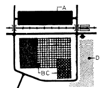
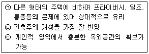
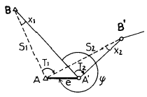
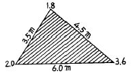
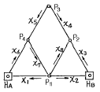
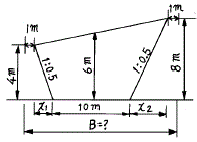
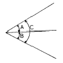

도시계획기사 (2004-03-07 기출문제)
1과목: 도시계획론
1. 다음 중에서 형태에 따른 도시공공시설의 분류 유형이라고 할 수 없는 것은?
- 면적시설
- 동적시설
- 선적시설
- 점적시설
(정답률: 알수없음)

2. 교통계획의 기법으로 볼 수 없는 것은?
- 통행수요조사(OD조사)
- 교통서비스 수준조사
- 통행분배모델
- 건물연면적 원단위법
(정답률: 알수없음)
3. 다음 중 공공재가 갖는 비경합성(non-rivalry)및 비배제성(non-exclusivity)의 특성에 의해 발생하는 문제는?
- 혼잡 비용의 문제
- 정보의 비대칭성문제
- 외부 불경제의 문제
- 무임 승차의 문제
(정답률: 알수없음)
4. 다음 중 공기업경영의 특성이라고 볼 수 없는 것은?
- 경제성
- 공공성
- 영리성
- 독립채산성
(정답률: 알수없음)
5. 버제스(Burgess)의 동심원지대 이론에서 제2지대의 특성을 잘못 설명한 것은?
- 점이지대 또는 변천지대라고 하며 유동성이 심한 지역이다.
- 도심과의 접근성이 양호하여 비공식 부문의 종사자들이 많이 거주한다.
- 슬럼이나 불량주택지구를 형성하는 경우가 많으며, 집값과 집세가 싸다.
- 외측이 저소득층 주택지대의 인접하여 있다.
(정답률: 알수없음)
6. 집단생잔법(cohort survival method)으로 인구를 추계할때 고려하지 않아도 되는 것은?
- 출산률과 사망률
- 생잔률
- 한계인구
- 전입, 전출의 비율
(정답률: 알수없음)
7. 다음 중에서 도시계획 수립을 위한 인구추계에서 시설 이용인구의 개념으로 적합한 것은?
- 현재 특정 도시시설의 이용대상자수를 말한다.
- 한 도시의 시설을 이용할 야간의 상주인구를 뜻한다.
- 도시시설로 인한 유입인구에서 유출인구를 뺀 인구수이다.
- 미래에 그 도시에서 주간에 활동하게될 인구를 뜻한다.
(정답률: 알수없음)
8. 대지로서의 효용 증진과 공공시설의 정비를 목적으로 하는 것으로, 도시 정부의 재정적 부담이 적어 1970년대,1980년대 도시개발에 자주 쓰여졌던 개발방식은?
- 신도시개발
- 도시재개발
- 토지구획정리사업
- 도시계획시설사업
(정답률: 알수없음)
9. 도시토지의 집약적이용을 위한 지역지구제를 실시할 경우 타 지역 지구간에 마찰이 생기는 경우가 있어 두 지역 지구 사이에 기능마찰을 완화시킬 수 있는 녹지대를 조성할 때 그 명칭은?
- 보존지대(resorce conservation zone)
- 환경보전지대(environmental conservation zone)
- 자연녹지지대(natural green zone)
- 완충지대(buffer zone)
(정답률: 알수없음)
10. 도시계획의 가장 궁극적인 목적은?
- 토지의 효율적인 이용
- 도시불경제의 최소화
- 지역경제 발전
- 공공복리 증진 및 국민의 삶의 질 향상
(정답률: 알수없음)
11. 도시 방재계획을 위해서는 도시계획에서 다음 사항들이 고려되어져야 한다. 가장 관계가 먼 것은?
- 도시 토지의 용도 순화를 도모하고 각종 건축물의 밀도를 통제한다
- 재해에 대해 취약한 지역을 조사하여 별도의 토지 이용계획을 수립한다
- 복잡한 도시구조를 정비하므로써 재해 대응에 원활화를 기한다
- 의료시설을 집중배치함으로써 재해시 응급조치의 중심 역할을 한다
(정답률: 알수없음)
12. 도시가 쇠퇴기에 들어설 때 나타나는 도시화 현상은?
- 집중적 도시화
- 교외 도시화
- 가도시화
- 역도시화
(정답률: 알수없음)
13. 다음은 중소도시의 기능 배치 개념도이다. A.B.C.D에 가장 적절한 기능으로 배치된 것은?

- 경공업-업무 및 판매-공공시설-종합운동장
- 경공업-공공시설-업무 및 판매-종합운동장
- 종합운동장-업무 및 판매-공공시설- 경공업
- 종합운동장-공공시설-업무 및 판매-경공업
(정답률: 알수없음)
14. 다음은 도시화의 경제가 발생하는 요인을 설명한 것이다. 옳지 않은 것은?
- 다수기업이 근접해서 입지하면 여러면에서 편익성이 있다
- 생산이나 노동공급면에서 상호보완성이 있다
- 도시적 편리성을 필요로 하는 종업원을 고용하는데 유리하다
- 다양한 업종이나 이질적인 경제활동이 존재하면 변동의 충격에 쉽게 대처하지 못한다
(정답률: 알수없음)
15. 다음 중 도시화 진전에 따른 우리나라의 도시공간구조적 특징이 아닌 것은?
- 시급 이상 도시지역 인구의 고밀도화
- 소수 대도시지역 인구집중의 편향적 도시체계
- 수도권의 비대성장과 종주화의 심화
- 생활권 중심의 지방거점도시의 균형적 성장
(정답률: 알수없음)
16. 다음 중 각각의 생활권계획의 범위와 그 내용이 서로 일치하지 않는 것은?
- 근린생활권은 행정동 단위와 일치시키는 것이 생활권 형성에 유리하다.
- 근린생활권으로써의 근린주구는 도시계획의 종합계획에 따른 최소단위가 된다.
- 중생활권(2차생활권)의 중심에는 상업.업무. 위락 등 혼합적 토지이용을 도모한다.
- 대생활권(3차생활권)은 "시" 단위의 행정구역과 일치하는 것이 생활권 형성에 유리하다.
(정답률: 알수없음)
17. 다음 중 도시화(Urbanization)에 대한 설명으로 옳지 않은 것은?
- 일반적 의미에서 도시화란 인구의 도시집중과 더불어 공간, 사회, 경제적 측면에서 도시적으로 변화해 가는 현상을 말한다.
- 산업과 경제활동의 지역적 불균형 구조를 심화시켜도 얇농간 개발의 불균형을 초래하였다.
- 무질서한 시가지 확산(Urban Sprawl)현상 외에 산업 구조의 고도화, 생활양식이 도시형으로 변해가는 것도 일종의 도시화 현상으로 볼 수 있다.
- 가도시화(Pseudo-Urbanization)는 도시화 현상의 하나로 볼 수 있으며, 유럽 선진국에서만 볼 수 있는 도시화 현상이다.
(정답률: 알수없음)
18. 상공인들이 길드를 결성한 후 절대 권력으로부터 독립 하여 탄생한 도시는?
- 로마도시
- 중세도시
- 르네상스도시
- 그리스도시
(정답률: 알수없음)
19. 중심업무지구(CBD)에 관한 다음 설명 중 틀린 것은?
- 도심은 도시의 어느 곳에서든지 최대의 접근성을 확보할 수 있는 공간이다.
- 도심에서 이루어지는 중추관리기능에는 행정관리, 기업관리 기능이 있다.
- 현대 사회의 대도시 공간에서는 도심지역에 기능이 집중화하는 경향이 있다.
- 도심은 성장단계에 따라 자연발생, 집중, 확대, 분산, 균형단계를 거친다.
(정답률: 알수없음)
20. 지속 가능한 도시개발(sustainable urban development)의 방향이 아닌 것은?
- 난방, 전력공급, 교통 등에서 에너지 절약을 효율적으로 달성할 수 있는 도시
- 주거, 공공시설을 일정 공간에 집적화, 나머지 지역을 녹색 도시화한 도시
- 기존 도시의 확장을 방지하기 위해 다수의 신도시를 건설함으로써 교외화를 촉진하는 것
- 고밀도 도시개발을 통하여 도시 주변의 자연환경을 보존한 도시
(정답률: 알수없음)
2과목: 도시설계 및 단지계획
21. 다음 중 단지계획의 정의에 관한 설명 중 맞지 않는 것은?
- 단지계획은 주생활에 필요한 공간을 설계하고 배분하는 작업이다.
- 단지계획은 건축, 토목, 조경, 도시계획 등의 영역에서 지원되며, 대지조성계획 및 시설물 배치계획을 포함한다.
- 단지계획은 의도된 대로 이루어지며 주거환경을 완전하게 개선할 수 있다.
- 단지계획은 공간적으로 일정한 범위를 가지게 되며 주거단지, 대학캠퍼스 단지 등의 유형이 있다.
(정답률: 알수없음)
22. 정보화 사회에 대응한 단지개발의 계획요인으로 부적절한 것은?
- LAN(근거리통신망) 도입
- 교통정보시스템
- 점증적 스카이라인(Skyline) 형성
- 방범보안시스템
(정답률: 알수없음)
23. 격자형 가로망의 장점을 설명하는 사항 중 틀린 것은?
- 도로의 위계를 쉽게 설정할 수 있다.
- 토지의 분할이 용이하다.
- 단계별 개발이 용이하다.
- 도시 경관의 정연성을 부각시킬 수 있다.
(정답률: 알수없음)
24. 테라스(Terrace)형 집합주택의 특성으로 잘못 설명된 것은?
- 경사진 지형을 활용하기 위한 주택의 집합 방법이다.
- 계단과 각 주호로의 접근의 위치를 자유롭게 정할 수 있다.
- 최대의 일광과 훌륭한 전망을 유지할 수 있다.
- 옥상의 활용을 극대화 할 수 있다.
(정답률: 알수없음)
25. 아파트생활에서 조망경관의 중요성이 증대되고 있는데 이것은 단지환경의 다음 중 어느 요인이 강조되고 있는 것인가?
- 단지의 영역성
- 단지의 적주성
- 단지의 공공성
- 단지의 효율성
(정답률: 알수없음)
26. 주택건설기준 등에 관한 규정에서 정하고 있는 주거지역의 최대소음도는 얼마인가?
- 50dB
- 65dB
- 80dB
- 95dB
(정답률: 알수없음)
27. 평균층수 3층, 건폐율 50%, 1호당 연상면적이 50 m2일 때 호수밀도는 얼마인가?
- 200호 / ha
- 300호 / ha
- 400호 / ha
- 500호 / ha
(정답률: 알수없음)
28. 주거단지내에서 차량의 감속을 유도하기 위하여 설치하는 기법은?
- 험프(hump)
- 볼라드(bollard)
- 가드레일(guard rail)
- 스트리트 훠니쳐(street furniture)
(정답률: 알수없음)
29. 단지계획을 수립하기 위해 인간의 활동행태(behavioral pattern)를 조사 분석하는 목적에 대한 설명으로서 가장 적절한 것은?
- 과거의 형태를 탈피해서 새로운 활동형태를 창조하기 위해
- 자연생태계의 개조를 통해 보다 쾌적한 인간 정주 공간을 제공하기 위해
- 공간적, 시간적으로 다양한 연속성을 갖는 인간활동을 단순화 하기 위해
- 인간활동의 목적과 그 주위 환경을 이용하는 방법을 조사 분석하기 위해
(정답률: 알수없음)
30. 지하 주차시설에서 우선적으로 고려해야 할 사항이 아닌것은?
- 경관
- 화재
- 방범
- 표식
(정답률: 알수없음)
31. 다음 중 아래의 특징을 가지는 주택유형은?

- 단독주택
- 다세대주택
- 연립주택
- 아파트
(정답률: 알수없음)
32. 도시의 구성에 있어서는 도로의 위계체제를 명확히 함과 동시에 거주환경지역(Environmental Area)을 설정하여 통과 교통을 배제함으로써 자동차로 부터 사람을 보호하는 것이 긴요한 과제라고 주장한 보고서는 무엇인가?
- Barlow Report
- Buchanan Report
- Utwatt Report
- Regional Survey of New York and its Environs Vol.Ⅲ.
(정답률: 알수없음)
33. 복합용도 구조란 대개 3개 이상의 용도가 집합되어 있는 건물을 말한다. 다음 용도 결합 중 어떤 것이 가장 보편적인 복합 용도 개발인가?
- 주거 + 업무 + 상업
- 공업 + 업무 + 창고
- 아파트 + 주차장 + 업무
- 공업 + 주거 + 상업
(정답률: 알수없음)
34. 400ha의 토지에 ha당 500인의 아파트, ha당 250인의 연립주택, ha당 100인이되는 단독 주택지를 면적 비율로 각각 30%, 30%, 40%로 개발하고 각각의 공공용지율을 40%, 30%, 30%로 한다면 이때의 단지의 순인구 밀도는 얼마인가?
- 375인/ha
- 396인/ha
- 425인/ha
- 527인/ha
(정답률: 알수없음)
35. 주거단지의 가구 분할 방법으로 틀린 것은?
- 도로의 길이를 최대화하여 가로를 면하는 획지의 수를 많게 한다.
- 건물의 종류를 고려해 가구의 폭과 깊이를 결정한다.
- 원형의 가구는 되도록 피한다.
- 공공시설과 외부공간의 배치를 미리 고려한다.
(정답률: 알수없음)
36. 단지계획 수립 지침으로 옳지 못한 것은?
- 획지의 크기는 건물사용 목적에 적합할 것
- 주택가로의 구배를 완만하게 할 것
- 가로는 평면교차에 의해 연결을 편리하도록 할 것
- 공공 시설단지를 확보할 것
(정답률: 알수없음)
37. 이상 도시 형성의 사조 중 주택단지에 가장 영향을 준 것은?
- Linear town
- Siedelung
- Mother town
- Garden city
(정답률: 알수없음)
38. 2차생활권 (중생활권)에서 설치될 수 있는 시설로서 적합한 것은?
- 쇼핑센터
- 우체국
- 초등학교
- 연구기관
(정답률: 알수없음)
39. 여러가지 지형의 경사에 관한 설명 중 틀린 것은?
- 4% 이하의 경사는 거의 평탄하게 보인다.
- 4-10%의 경사는 완만한 경사로 보이지만 단지조성은 곤란하다.
- 10% 이상의 경사는 오르내리는데 곤란을 느끼지만 자연경사대로 건축할 수 있다.
- 25% 이상의 경사지는 잔디를 심더라도 잔디깎기 기계를 사용하지 못한다.
(정답률: 알수없음)
40. 기능에 따른 공업단지의 유형이 아닌 것은?
- 전통적인 공업단지
- 업무단지
- 농공단지
- 과학단지· 첨단산업단지
(정답률: 알수없음)
3과목: 도시개발론
41. 지형공간정보체계의 적용분야에 따른 명칭약어의 해설로서 합당하지 않은 것은?
- LIS - 토지 및 지적관련 정보 관리
- UIS - 도시관련 정보 관리
- SIS - 공간관련 정보 관리
- AM/FM - 무선 관련 정보 처리
(정답률: 알수없음)
42. A'점에서 편심관측을 아래 그림과 같이 행하였다. ∠x1, ∠x2는 얼마인가?(단, B:기지점, S1=2000m, S2=1,000m, e=0.1m, T2=120° , ψ =330° 으로 한다.)

- x1 = 3", x2 = 6"
- x1 = 5", x2 = 10"
- x1 = 10", x2 = 20"
- x1 = 15", x2 = 30"
(정답률: 알수없음)
43. 스타디아측량에서 다음과 같은 관측값을 얻었다. B점의 지반고는? (단, 기계점 A의 지반고 100.00m, 연직각 α =-10°, 상시거선 2.78m, 하시거선 1.38m, 기계고 1.50m, K = 100, C = 30cm)
- 123.41m
- 120.41m
- 79.59m
- 75.43m
(정답률: 알수없음)
44. 다음 그림은 삼각측량에서의 좌표계산을 위한 것이다. A 점의 좌표(XA, YA)를 알고 C 점의 좌표를 계산하는 식으로 옳은 것은?(단, T는 방향각이고 S는 변장임)
- Xc = XA + SAC cos TAC
YC = YA + SAC sin TAC - Xc = XA + SAC sin TAC
Yc = YA + SAC cos TAC - Xc = XA - SAC cos TAC
Yc = YA - SAC sin TAC - Xc = YA + SAC cos TAC
Yc = XA + SAC sin TAC
(정답률: 알수없음)
45. 그림과 같은 삼각형 지역의 체적은 얼마인가?(단, 각 점에 주어진 수치는 지반고이며 m단위이고, 각 변에 주어진 거리는 수평면에 투영된 거리임.)

- 151.4m3
- 75.7m3
- 19.3m3
- 12.3m3
(정답률: 알수없음)
46. 아래 그림과 같이 4점(P1∼P4)의 표고를 결정하기 위하여 2점의 기지수준점(HA, HB)에 연결하는 8노선(x1∼x8)의 수준측량을 실시하였다. 이 때 조건식의 수는 몇 개인가?

- 5개
- 4개
- 3개
- 2개
(정답률: 알수없음)
47. 다음 공간자료의 형태에 대한 설명중 틀린 것은?
- 점(占)은 위치 좌표계의 단 하나의 쌍으로 표현되는 대상이다.
- 선(線)은 점이 연결되어 만들어지는 집합이다.
- 면적(面積)은 분리된 단위를 형성하는 것에 가까운 점분할의 집합이다.
- 표면(表面)은 공간적 대상물의 범주로 간주되며 연속적인 자료의 표현이다.
(정답률: 알수없음)
48. 평판측량에서 도상오차의 허용범위를 0.2㎜로 할 때 30㎝의 구심오차를 허용할 수 있는 도면의 축척한계는?
- 1/1,000
- 1/1,200
- 1/1,500
- 1/3,000
(정답률: 알수없음)
49. 삼각망 구성에 있어서 다음 중 가장 정밀도가 높은 삼각망은?
- 유심삼각망
- 사변형 삼각망
- 단열삼각망
- 종합삼각망
(정답률: 알수없음)
50. 지형공간정보체계(GSIS)의 자료기반구축에 대한 설명 중 틀린 것은?
- GPS에 의해 측량된 지형정보자료를 이용하여 구축할 수 있다.
- SPOT 위성영상에 의해 얻어진 지형정보자료를 이용하여 구축할 수 있다.
- 자료기반구축을 위해 레스터방식과 벡터방식을 이용할 수 있으며 수치지도는 레스터방식에 적합하다.
- 자료기반구축을 위해 각종 도면이나 대장, 보고서 등이 이용된다.
(정답률: 알수없음)
51. 동일각을 측정함에 있어 측정회수를 다르게 적용하여 얻은 결과이다. 최확치는? (단, 42° 28'40"(2회측정), 42° 28'46"(4회측정), 42° 28'48"(6회측정))
- 42° 28'44"
- 42° 28'46"
- 42° 28'48"
- 42° 28'50"
(정답률: 알수없음)
52. 수평각 관측에서 수평축과 시준축이 직교하지 않음으로써 일어나는 각 오차는 어떻게 소거하는가?
- 정· 반위관측
- 반복법관측
- 방향각법 관측
- 조합각관측법
(정답률: 알수없음)
53. GPS 측량에 대한 기술 중 맞지 않는 것은?
- 인공위성의 전파를 수신하여 위치를 결정하는 시스템이다.
- 우천시에도 위치 결정이 가능하다.
- 수신점의 높이를 결정하는데 이용될 수 있다.
- 2점이상 관측시 수신점간 시통이 되지 않으면 위치를 결정할 수 없다.
(정답률: 알수없음)
54. 트래버스측량에 의하여 가장 정확도가 요구되는 측량에서 사용하여야 할 방법은?
- 기지점으로부터 출발하여 다른 기지점에 결합하는 트래버스
- 임의의 측점에서부터 출발하여 동일 측점으로 되돌아와 폐합하는 트래버스
- 정도가 높은 삼각점에서 출발하는 개방 트래버스
- 임의의 점에서 삼각점에 결합하는 트래버스
(정답률: 알수없음)
55. 다음 중 차원이 다른 하나는?
- 선의 특수한 형태로 문자열(String)
- 호(Arc)
- 절점(Node)
- 사슬(Chain)
(정답률: 알수없음)
56. 축척 1/25,000 지형도에서 산 정상에서부터 산 밑까지 도상거리가 80㎜이고 산 정상의 표고는 842m, 산밑의 표고는 342m이었다. 이 때 사면경사는 얼마인가?
- 15%
- 25%
- 35%
- 40%
(정답률: 알수없음)
57. 그림에서 단면의 용지 폭(B)은? (단, 여유폭은 1m로 한다.)

- 18m
- 16m
- 15m
- 12m
(정답률: 알수없음)
58. 삼각망을 구성하는데 있어서 내각을 작게 하는 것이 좋지 않은 이유를 가장 잘 설명하는 것은?
- 한 삼각에 있어서 작은 각이 있으면 반드시 다른 각 중에서 큰 각이 있기 때문이다.
- 경도, 위도 또는 좌표계산이 불편하기 때문이다.
- 한 기지변으로부터 타변을 정현비례법칙으로 구할 때 오차가 많이 생기기 때문이다.
- 측각하기가 불편하기 때문이다.
(정답률: 알수없음)
59. 두점간의 고저차를 구하기 위하여 경사거리 30.0m± 20cm, 경사각 15° 30'의 값을 얻었다. 경사거리와 경사각이 고저차 결정의 독립변수로 작용할 때 고저차의 오차는?
- ± 5.3cm
- ± 10.5cm
- ± 15.8cm
- ± 27.6cm
(정답률: 알수없음)
60. 그림과 같은 각을 관측한 결과 ∠A=27° 37′ 44″ , ∠B=26° 45′ 30″ ,∠C=54° 23′ 35″ 이다. 각 A,B,C의 보정치는 얼마인가?

- ∠A=+7″ ,∠B=+7″ ,∠C=-7″
- ∠A=-7″ ,∠B=-7″ ,∠C=+7″
- ∠A=+7″ ,∠B=+7″ ,∠C=+7″
- ∠A=-7″ ,∠B=-7″ ,∠C=-7″
(정답률: 알수없음)
4과목: 국토 및 지역계획
61. 다음의 투자실행계획 예산제도 가운데에서 도시계획과 가장 밀접한 관계를 맺고 있는 예산제도는?
- 자본증진예산제도(Capital Improvement Programming)
- 계획예산제도(Planning-Programming-Budgeting-System)
- 제로베이스예산제도(Zero Base Budgeting)
- 목표관리예산제도(MBO)
(정답률: 알수없음)
62. 다음 중 한계자원(Marginal resources)의 특성에 관한 설명 중 가장 옳지 못한 것은?
- 현재의 시장구조하에서는 개발가치가 없다.
- 단위투입당 생산성이 매우 낮다.
- 개발 기술이 개발되어 있지 못하다.
- 자원의 매장량이 거의 고갈상태에 이르렀다.
(정답률: 알수없음)
63. 우리나라 국토계획의 목적에 해당하지 않는 사항은?
- 도시지역과 농촌지역이 유기적인 관계를 맺으며 균형있게 발전하게 한다.
- 1· 2· 3차산업이 발전할 수 있도록 모든 산업을 조화있게 배치한다
- 국민이 보다 안전하고 풍요한 생활을 향유할 수 있도록 국토구조와 환경을 개선한다.
- 소득의 증대, 노동조건의 개선, 농촌의 기계화로 노동 시간을 단축한다.
(정답률: 알수없음)
64. 우리나라는 지난 20여년간 대도시와 그 주변지역을 포함하는 대도시권의 급성장을 경험해 왔다. 이와같이 대도시권이 형성되는 일반적인 요인으로 볼 수 없는 것은?
- 교통.통신의 발달로 인한 도시세력권의 확장
- 위성도시발달 등 대도시 주변부의 도시화
- 대도시권에 대한 정부의 각종 유인 정책
- 중심도시 산업의 주변 지역에로의 분산
(정답률: 알수없음)
65. 사회계획과 지역계획에서 공통적으로 다루지 않는 부문은?
- 사회복지 시설부문
- 주거환경 개선부문
- 환경오염 방지부문
- 노사관계 개선부문
(정답률: 알수없음)
66. 국토기본법에 의하여 수립되어야 할 지역계획이 아닌것은?
- 수도권발전계획
- 광역권개발계획
- 부문별 계획
- 개발촉진지구 개발계획
(정답률: 알수없음)
67. 국토 및 지역계획 수립 과정에서 반드시 고려하지 않아도 되는 것은?
- 계획집행수단의 강구
- 외국사례의 분석
- 대안의 비교 및 검토
- 문제의 진단 및 분석
(정답률: 알수없음)
68. 지역계획의 대상인 지역문제 중 지역 격차문제에 대한 설명으로 알맞지 않는 것은?
- 소득과 고용의 측면에서의 경제적 격차
- 정책 결정과정에서 참여 및 영향력 발휘의 정치적격차
- 생산여건 및 생활 환경 수준 측면에서의 사회적 격차
- 교육수혜 정도에 따른 인적 격차
(정답률: 알수없음)
69. 부드빌(Boudevile)에 의한 지역 분류는?
- 성장지역 - 침체지역 - 쇠퇴지역
- 동질지역 - 결절지역 - 계획지역
- 과밀지역 - 중간지역 - 후진지역
- 보완지역 - 대체지역 - 발전지역
(정답률: 알수없음)
70. 권역을 설정하는데 가장 유용한 통계적 기법은?
- 회귀분석(Regression Analysis)
- 군집분석(Cluster Analysis)
- 분산분석(Analysis of Variance)
- 로짓모형(Logit Model)
(정답률: 알수없음)
71. 어떤 국가가 지프(Zipf)의 순위 - 규모법칙(rank-size rule)에 따른 순위규모분포(q = 1)를 따른다고 할 때, 수위 도시의 인구가 100만명이면 제4순위의 도시의 인구는 얼마나 되리라 예상되는가?
- 40만명
- 33만명
- 25만명
- 20만명
(정답률: 알수없음)
72. 다음 중 Hirshman의 불균형 지역성장이론을 가장 잘 설명하는 것은?
- 대약진(Big-push) 전략
- 역류효과(backwash effect)와 파급효과(spread effect)
- 쇄신의 계층적 파급(hierarchical diffusion)
- 성극효과(Polarization effect)와 분극효과(Trickle down effect)
(정답률: 알수없음)
73. 신도시의 입지로 바람직하지 않은 것은?
- 용수 공급이 가능하고 배수가 용이한 곳
- 도로,철도 등의 교통기관이 주변 도시와 연계되는 곳
- 공항, 군사시설 등 개발상의 제약 요인이 적은 곳
- 대규모의 평탄지가 확보된 생산녹지
(정답률: 알수없음)
74. 성장거점이론에 있어서 선도 산업이 갖는 특성이 아닌것은?
- 성장을 불러올 진보된 수준의 기술을 요구하는 새롭고 동적인 산업이다.
- 다른 부분과 강한 산업적 연계를 갖는다.
- 국내시장을 상대로 하는 상품을 생산하는데 이 상품의 수요에 대한 소득 탄력성은 높다.
- 다른 산업에 비하여 성장속도는 느리나 안정된 성장을 보인다.
(정답률: 알수없음)
75. 국토계획이 맨처음 도입된 나라는?
- 이태리
- 영국
- 독일
- 프랑스
(정답률: 알수없음)
76. 일반적으로 국토 공간내에서의 쇄신확산에 가장 크게 기여하는 것으로 알려진 확산 경로는?
- 전염적 확산
- 계층적 확산
- 이동적 확산
- 파상적 확산
(정답률: 알수없음)
77. 지역개발이론 주창자와 이론이 제대로 연결된 것은?
- 페로우(Perroux) - 수출기반이론
- 로스토우(Rostow) - 단계적성장이론
- 미르달(Myrdal) - 성장거점이론
- 노스(North) - 지역간균형성장이론
(정답률: 알수없음)
78. 국토 권역 설정에 있어 중심이 되는 권역 설정의 원칙은?
- 결절성의 원칙
- 동질성의 원칙
- 사업성의 원칙
- 타당성의 원칙
(정답률: 알수없음)
79. 다음 설명 중 성장거점이론의 전신인 성장극(growth pole)이론에 관한 것은?
- 성장속도가 빠르고 전· 후방연관 효과가 큰 경제활동 분야
- 인구규모가 큰 대도시 중심
- 인구유입이 빠르고 시가화지역이 넓은 거점도시
- 성장잠재력이 크고 각종 도시시설이 잘 구비되어 있는 지역중심의 도시
(정답률: 알수없음)
80. 자원의 고갈이나 대체자원의 개발 등으로 해당 자원에 대한 수요의 감퇴 혹은 기술개발에 의해 기존의 기반산업에 있어 성장 둔화가 야기되는 문제 지역은?
- 정체지역
- 과밀지역
- 과소지역
- 낙후지역
(정답률: 알수없음)
5과목: 도시계획관계법규
81. 다음은 도시개발법상 환지를 정한 토지에 대한 일반적인 청산금 징수시기에 관한 것이다. 옳은 것은?
- 등기완료후
- 공사시행 완료 보고후
- 환지처분 공고가 있은 후
- 환지계획 인가 후
(정답률: 알수없음)
82. 도시및주거환경정비법에서 정한 정비기반시설이 아닌것은?
- 공원
- 공용주차장
- 공동구
- 체육시설
(정답률: 알수없음)
83. 도시지역안의 15,000m2의 종합병원이 300 병상의 시설을 갖출 경우 최소 부설주차장의 설치 기준은?
- 100대
- 110대
- 120대
- 125대
(정답률: 알수없음)
84. 다음 중 개발제한구역 훼손부담금에 대한 설명 중 틀린것은?
- 부담금의 부과· 징수권자는 시장· 군수이다..
- 부담금징수의 목적은 개발제한구역의 훼손을 억제하고 개발제한구역의 관리를 위한 재원을 확보하기 위한 것이다.
- 개발제한구역 주민의 주거· 생활편익· 생업을 위한 시설의 설치 및 영농을 목적으로 토지의 형질변경시 부담금을 감면할 수 있다.
- 징수된 부담금은 개발제한구역의 합리적 관리를 위한 조사· 연구 등에 소요되는 비용에 사용할 수 있다.
(정답률: 알수없음)
85. 지구단위계획에 관한 설명 중 틀린 것은?
- 지구단위계획에서 획지별 건폐율, 용적율을 정할 수있다.
- 재건축사업에 의하여 공동주택을 건축하는 지역에 대하여는 지구단위계획구역을 지정할 수 있다.
- 지구단위계획구역 중 개발촉진지구에 대해서는 당해 지역에 적용되는 용적률의 1.5배의 범위안에서 지구단위계획으로 용적률을 완화하여 적용할 수 있다.
- 주민은 지구단위계획구역의 지정을 제안할 수 있다.
(정답률: 알수없음)
86. 국토기본법에 의거한 국토계획에 대한 설명 중 적당하지 않은 것은?
- 지역계획은 단기적 정책 목표를 달성하기 위하여 수립하는 사업이다.
- 국토종합계획은 국토 전역을 대상으로 한다.
- 부문별계획을 국토 전역을 대상으로 하여 특정부문에 대한 장기적인 발전방향을 제시하는 계획이다.
- 시군종합계획은 국토의계획및이용에관한법률에 의하여 수립한다.
(정답률: 알수없음)
87. 도시공원에 관한 조성계획을 수립할 수 있는 자는?
- 서울특별시장
- 행정자치부장관
- 건설교통부장관
- 도지사
(정답률: 알수없음)
88. 수도권정비계획에 포함되지 않는 것은?
- 인구및 산업 등의 배치에 관한 사항
- 환경보전에 관한 사항
- 도로,상하수도등 사회간접시설의 설치에 관한 사항
- 권역의 구분 및 권역별 정비에 관한 사항
(정답률: 알수없음)
89. 국토종합계획의 승인에 대한 설명으로 가장 적절한 것은?
- 국토정책위원회의 자문과 국무회의의 심의를 거쳐 승인
- 관계중앙행정기관의 장과 협의후 국토정책위원회의 심의
- 시도지사는 심의안에 대한 의견을 60일이내에 제시
- 국무회의심의는 관계중앙행정기관의 장과의 협의로 대체 가능
(정답률: 알수없음)
90. 현행 수도권정비계획법에서 권역을 구분한 것이 아닌것은?
- 성장관리권역
- 개발유도권역
- 과밀억제권역
- 자연보전권역
(정답률: 알수없음)
91. 국토의계획및이용에관한법률상 건폐율이 가장 작은 용도지역은?
- 주거지역
- 계획관리지역
- 공업지역
- 상업지역
(정답률: 알수없음)
92. 도시계획시설의결정· 구조및설치기준에 관한 규칙에서 정한 용도지역별 도로율이 틀린 것은?
- 주거지역 : 20% 이상 - 30% 미만
- 상업지역 : 25% 이상 - 35% 미만
- 공업지역 : 10% 이상 - 20% 미만
- 녹지지역 : 5% 이상 - 15% 미만
(정답률: 알수없음)
93. 도시지역안에서 한 토지에 대한 지역, 지구, 구역의 지정에 관한 설명 중 옳지 않은 것은?
- 동시에 2개 이상의 용도지역으로 지정될 수 있다.
- 동시에 2개 이상의 지구로 지정될 수 있다.
- 하나의 용도지역과 동시에 2개 이상의 지구로도 지정될 수 있다.
- 하나의 구역과 동시에 하나의 용도지역으로 지정될 수도 있다.
(정답률: 알수없음)
94. 도시및주거환경정비법에 의하여 정비사업을 위한 토지 수용시 공익사업을위한토지등의 취득및보상에관한법률 상의 사업인정은 언제로 보는가?
- 재개발기본계획 입안시
- 사업시행 인가 고시
- 관리처분의 인가 고시
- 분양신청시
(정답률: 알수없음)
95. 주차장의 주차단위구획의 설치기준에 대한 설명으로서 맞지 않는 것은?
- 기본규격은 너비 2.3미터이상, 길이 5미터 이상이다.
- 지체장애인 전용주차장의 주차구획의 길이는 5미터 이상이다.
- 지체장애인 전용주차장의 주차구획의 너비는 3.3미터 이상이다.
- 평행 주차 형식인 경우 주차구획의 길이는 6.5미터 이상이다.
(정답률: 알수없음)
96. 건축법령상 2 이상의 필지를 하나의 대지로 할 수 있는 토지가 아닌 것은?
- 하나의 건축물을 2필지 이상에 걸쳐 건축하는 경우에는 그 건축물이 건축되는 각 필지의 토지를 합한 토지
- 도시계획시설에 해당하는 건축물을 건축하는 경우에는 당해 도시계획시설이 설치되는 일단의 토지
- 지적법의 규정에 의하여 합병이 불가능한 경우 중 각 필지의 지번지역이 서로 다르거나 각 필지의 도면 축척이 달라 그 합병이 불가능한 필지의 토지를 합한 토지
- 도로에 접하여 건축하는 건축물의 경우에는 시장·군수· 구청장이 당해 건축물이 건축되는 토지로 정하는 토지
(정답률: 알수없음)
97. 관광진흥법상의 다음 사항 중 적절하지 않은 것은?
- 관광개발기본계획은 5년마다 수립한다.
- 경미한 권역계획의 변경은 관광지면적의 축소도 해당된다.
- 경미한 면적 변경이란 관광지 지정면적의 100분의 30 이내이다.
- 조성계획의 승인 신청시에는 조감도 첨부한다.
(정답률: 알수없음)
98. 도시공원법에서 녹지를 세분할 경우 알맞게 짝지워진 것은?
- 완충녹지, 자연녹지
- 자연녹지, 생산녹지
- 생산녹지, 경관녹지
- 경관녹지, 완충녹지
(정답률: 알수없음)
99. 시행자가 택지개발사업 실시계획 승인을 얻고자 할 때 택지개발사업 실시계획 승인 신청서를 건설교통부장관에게 제출하여야 할때 첨부하는 사항에 거리가 먼 것은?
- 자금계획서
- 계획 평면도 및 개략설계도서
- 공공시설등의 명세서 및 처분계획서
- 주요 시설물의 관리처분에 관한 사항
(정답률: 알수없음)
100. 국토의계획및이용에관한법률에서 도시기본계획에 포함 되어야할 정책 사항이 아닌 것은?
- 지역적 특성 및 계획의 방향 . 목표에 관한 사항
- 공간구조, 생활권의 설정 및 인구의 배분에 관한사항
- 경관계획에 관한 사항
- 환경의 보전및 관리에 관한 사항
(정답률: 알수없음)